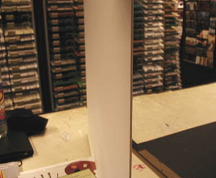
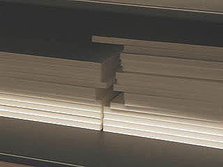
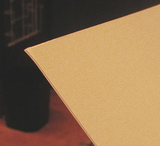

C'est la raison pour laquelle les papetiers (notamment
Vinci-Stouls)
proposent des cartons bois contre-collés,
sorte de "haut de gamme" des
cartons, dont une face est couverte d'un papier sur lequel il est possible de
peindre (c'est typiquement le "contre-collé lavis-Bristol"),
alors que l'autre face est couverte d'un autre papier qui n'a pas
vocation à être peint. Certains contre-collés "une face" ne sont collés
que d'un côté. Ils ont une fâcheuse tendance à s'incurver.
Les contre-collés pour encadrement
(Canson, Vinci-Stouls, Fabriano, etc., tous basés sur un carton
neutre et un papier à dessin) peuvent
être utilisés notamment pour les lavis et
techniques mixtes à l'eau, mais ils ont aussi une déplorable tendance
générale à s'incurver naturellement, n'étant collés que sur une face.
Ils sont
généralement élaborés sur un support de carton bois, mais aussi, parfois,
sur des cartons teintés ("esprit" coloré, voir ci-dessous). Les épaisseurs de l'ordre d'un millimètre
jusqu'à 2 mm
sont le plus souvent destinés aux maquettistes - surtout les "double
faces Bristol". Les peintres employant
l'acrylique ou travaillant les collages préfèrent souvent les contre-collés
"lavis-bristol" d'au
moins 2,5 mm - la photo ci-dessus à gauche montre précisément un
contre-collé de cette épaisseur. Les dimensions dépassent
rarement le grand monde.
Les contre-collés peuvent être pourvus
* de "deux faces", présentant effectivement deux faces
identiques faites de papier bristol (destination : maquette ou
présentation),
* d'une "face lavis" (typiquement, du papier
lavis Vinci, face destinée à être peinte, encollée, travaillée de
quelque manière) et d'une "face bristol" (utilitaire - voir contre-collage).
Ils sont nommés "lavis-bristol".
* d'une face "papier artistique
ou décoratif". Il s'agit alors de contre-collés
d'encadrement pouvant être détournées de leur destination
normale. Le contre-collé vergé, par exemple autorise des
techniques combinées
fusain/sanguine/pastel/aquarelle/acrylique, mais il doit être
tendu de préférence pour permettre l'usage de peintures à
l'eau.

* de mousse ("carton-plume",
"cadapac ®", support pour présentations, pour maquettes,
assez inadaptés à la peinture ou aux collages massifs). Le centre du
"plume" est une
mousse de polyester, légère mais robuste (plus ou mois selon son épaisseur, 3 à 10mm),
sur laquelle sont plaquées deux feuilles de bristol très fin (ou autre
papier lisse), au recto et
au verso. Dans le cas où un encollage doit être effectué sur la tranche,
une colle spécifique doit être employée car la plupart des colles
habituelles font littéralement fondre la mousse.
Photo : cartons-plume de 10 mm d'épaisseur.

* de cartons chimiquement neutres
teintés, le
contre-collé final étant théoriquement destiné à l'encadrement :
"L'esprit" coloré apparaît sur la tranche biseautée des
maries-louises.
ATTENTION : les contre-collés d'encadrement
couverts d'un papier noir ne sont pas toujours garantis sans acides.
Image
ci-contre : un contre-collé vergé de 0,8 mm d'épaisseur.